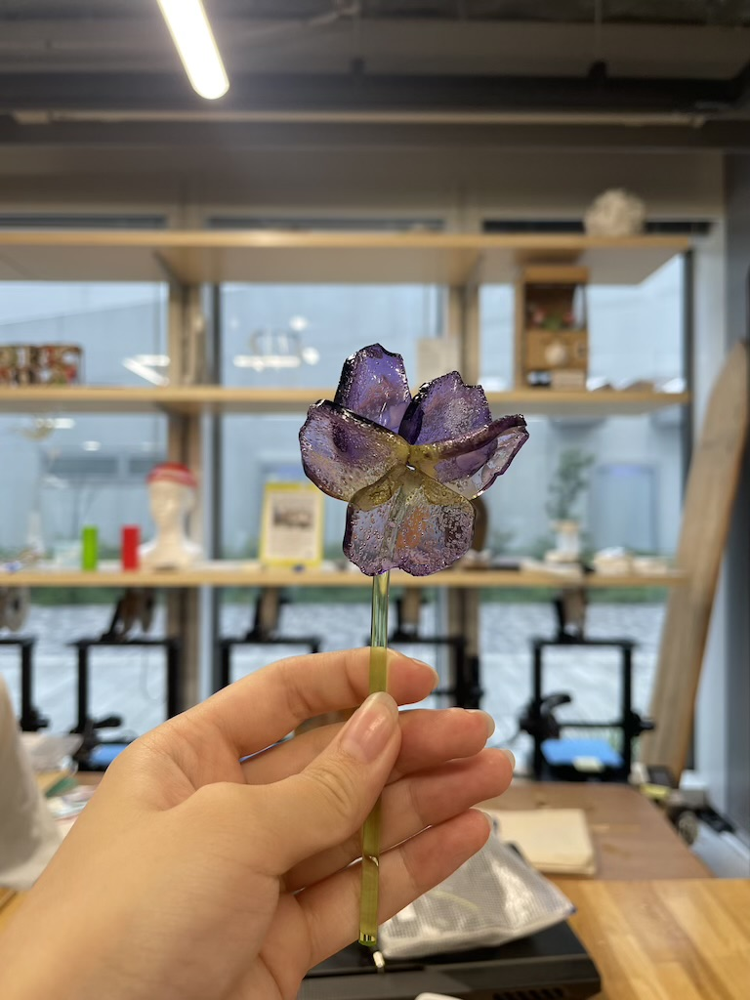

~アイデアスケッチ~
~概要~
心を癒してくれるお花は枯れやすく、お手入れが大変なため家に飾るのは面倒だと感じる人もいると思う。
そんな人でも大丈夫なように枯れないお花を作ろうと思う。
淡く光る四季折々のお花を自分でレイアウト可能にする。
~プロセスノート~
■は考えないといけないこと、疑問等
●は具体的にやること
→はやったこと
■鉢はどうするか
●3COINSで良い形のガラス容器を見つけ、中が透けないように色をつける
→ガラス容器購入完了
■お花はどう作るか
●アクリル板をレーザーカットし、曲げて色をつける
→レーザーカットのための型作り完了
■どうやって鉢にお花を挿すか
●容器にハマるような円盤型のアクリル板に、お花を一輪ずつ挿せるような穴をたくさん開ける
■どうやって光らせるか
●arduinoを花瓶の近くに設置。
→書き込んだプログラミングのQRコードを作成し、アクリルにプリント。QRコードを読み取れれば誰でも光らせられるように
■茎の部分はどうするか
●購入する
→購入し、茎に見えるように染色
■お花の色
●カットしたアクリルを染色する。
→本物のお花に近い色になろように染色した。グラデーションも作った。
■瓶から光が漏れる
●瓶に色を付ける
→お花に光が届くように白く塗った。
こだわりポイント！！
ヒートドライヤーを利用して一つ一つ手作業で形を形成したため、全く同じものが一つもない！だからこそお花のリアルさを表現することができた。
使用したモノ
・3COINSで購入した瓶（¥330）
・アクリル板
・ヒートドライヤー
・アクリル棒3mm（¥330）
・arduino
・テープライト
・マスキングテープ
・アクリル絵の具（白）
以下参考画像

~紹介動画~